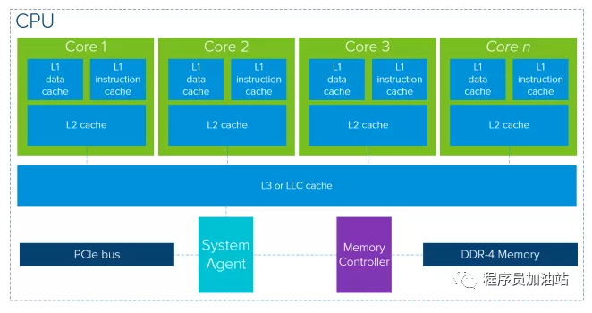

GPU topic：延迟 vs. 带宽 vs. 吞吐量
再谈延迟，带宽和吞吐量之前，先看看在之前分享的文章中我们说过这样的一个例子：
GPU内存架构和命令的处理
上面的例子以同时期的i7-2600k和GeForce GTX480来进行对比。i7-2600k的存储带宽在表现好的时候可以达到19GB/s, GTX480的存储带宽则是将近180GB/s。基本上就是相差了一个数量级！从带宽的角度来讲GPU基本上是完胜的。
从延迟角度来看，i7-2600k一次cache miss的大概耗费140个Cycle, 然而GTX480一次cache miss需要耗费400~800个Cycle。同时考虑i7-2600k的主频时2.93GHz，GTX480的时钟频率是1.4GHz。这么看来好像GPU非常的弱鸡。
那么为什么会导致这种现象呢？这一切还得从GPU设计的初衷来看。CPU优化的目标是尽可能快地在尽可能低的延迟下执行完成任务，同时保持在任务之间具体快速切换的能力。它的本质是以序列化的方式处理任务。GPU的优化则全部都是用于增大吞吐量的，它允许一次将尽可能多的任务推送到GPU内部。然后GPU通过大数量的Core并行处理任务。下面的示例性图表显示CPU和GPU的“核心”计数。它强调两者的主要对比是GPU有更多的核心来处理任务。
然而，这不仅仅是Core数量这么简单。一般我们说NVidia的GPU时，我们说的Core指的是由ALU组成的CUDA算术逻辑单元。
从CPU和GPU的总体架构上我们可以看到两者有很多相似之处。两者都使用缓存层、内存控制器和全局内存这样的内存结构。现代CPU体系结构的高层概述表明，CPU完全是通过使用缓存降低内存访问的延迟。让我们首先看一个图表，它显示了一个通用的、以内存为中心的现代CPU。

单个CPU包由包含独立数据和指令的内核组成，这些内核都包含有自己的L2缓存支持。L3缓存（最后一级缓存）在多个核心之间共享。如果数据不在缓存层中，它将从全局DDR4内存中获取数据。每个CPU的内核数可以达到28或32个，在Turbo模式下可以达到2.5ghz或3.8ghz，这取决于品牌和型号。缓存大小的范围高达每核2MB二级缓存。
如果我们对比看看一个GPU的上层架构概述，GPU的核心就是尽可能多的让可用的核心工作，然而它对降低缓存访问延迟的关注则相对较少。
单个GPU设备由多个处理器集群组成，其中包含多个流式多处理器（SM）。每个SM容纳一个L1指令缓存层及其相关Core。通常，一个SM在从全局GDDR-5内存中提取数据之前使用一个专用的L1缓存和一个共享的L2缓存，它的体系结构可以容忍内存延迟。
与CPU相比，GPU使用的内存缓存层更少，而且相对较小。原因是GPU有更多的晶体管专用于计算，这意味着它不在乎从内存中检索数据需要多长时间。只要GPU手头有足够的计算量，潜在的内存访问“延迟”就会被屏蔽，使其保持忙碌。
其实GPU针对数据并行吞吐量计算进行了优化。看看核的数量，它很快向你展示了并行的可能性，这是它的核心思想。当查看目前的NVIDIA旗舰产品，特斯拉V100架构，一个设备包含80个SM的，每个包含64个核心，共有5120个核心！任务不被调度到单个内核，而是调度到处理器集群和SM。这就是它能够并行处理的方式。现在将这个强大的硬件设备与编程框架结合起来，这样应用程序就可以充分利用GPU的计算能力。
- 原文作者：Binean
- 原文链接：https://bineanju.gitee.io/blog/post/20210523GPU-%E5%BB%B6%E8%BF%9F-%E5%B8%A6%E5%AE%BD-%E5%90%9E%E5%90%90%E9%87%8F/
- 版权声明：本作品采用知识共享署名-非商业性使用-禁止演绎 4.0 国际许可协议进行许可，非商业转载请注明出处（作者，原文链接），商业转载请联系作者获得授权。